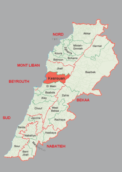
keserwen graphic for lebanon
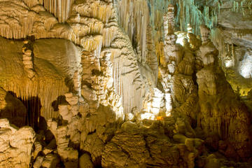
grotto jeita
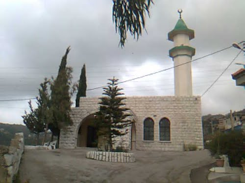
mosque in keserwen
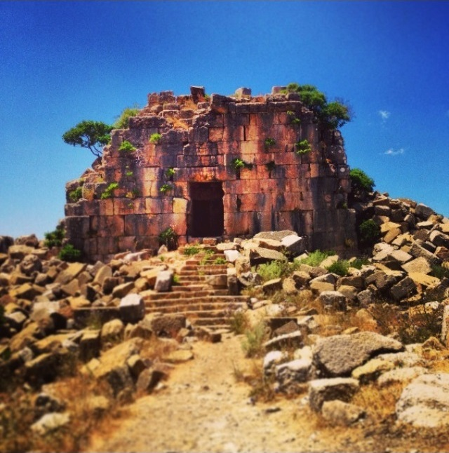
jroud keserwan
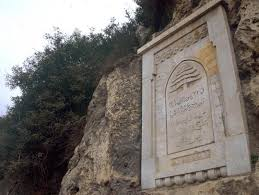
the effects of the french in naher kaleb
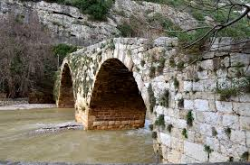
flow of naher kaleb
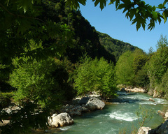
naher ibrahim
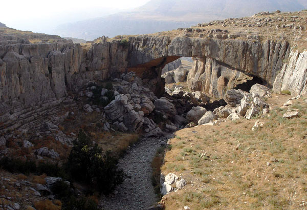
faqra lebanon
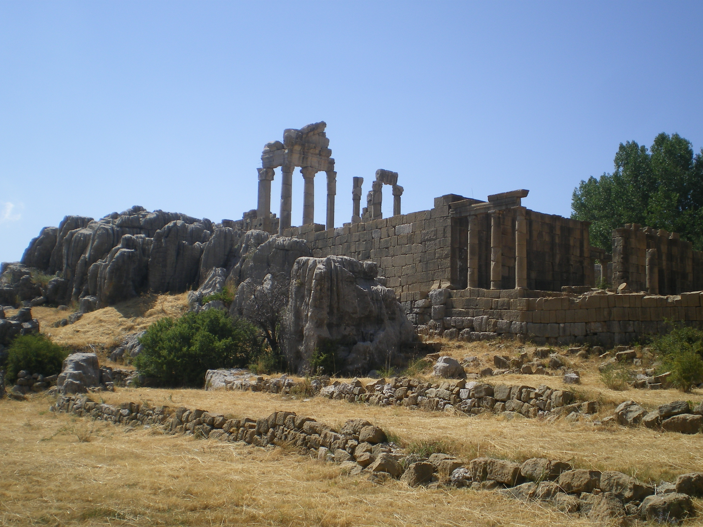
faqra ruins lebanon
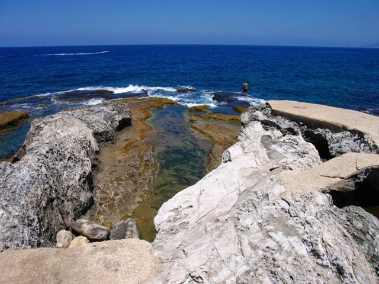
safra rock

moudaraj el rouman zook
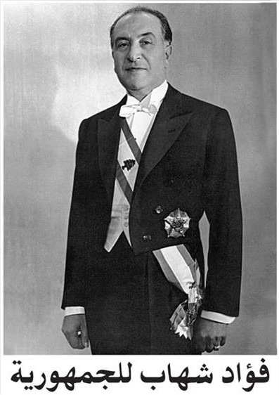
Fouad CHEHAB
19 March 1902
Ghazir, Keserwan
3rd President of Lebanon